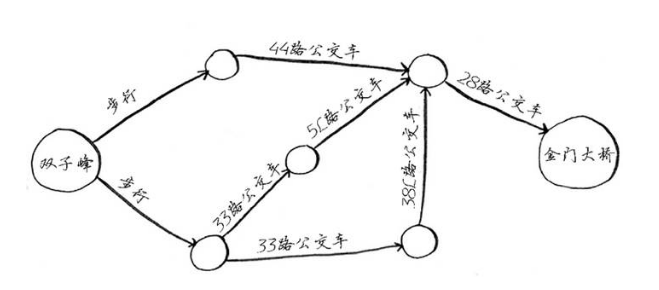
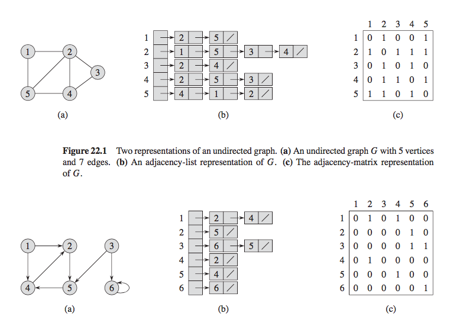
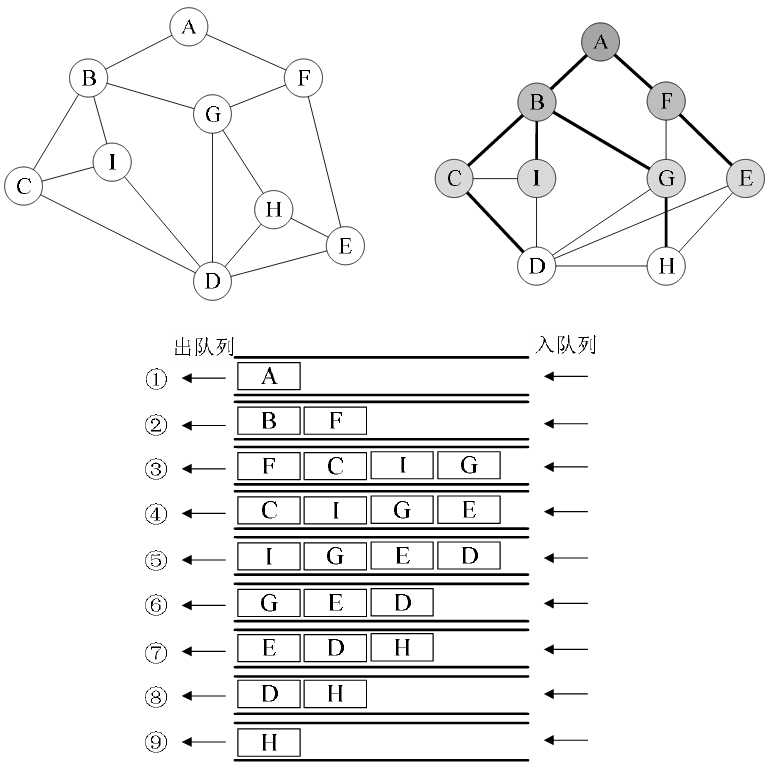

图¶
之前们讲过很多数据结构了，包括线性结构、链式结构、树结构等，这些结构基本就能应付我们的业务开发了。 这一章来看下图结构，图的使用也比较广泛，比如人物关系、路径选择等等，相比前面的一些数据结构和算法要相对复杂一些。 不过也不用担心，除非是特定的后端业务，一般图结构的使用比较少。这一章我们简单地介绍下图结构，以及图的搜索算法。
什么是图？¶
我们先来考虑日常生活中的一个问题，我们在出行的时候一般会考虑使用地图软件搜下从一个地点到另外一个地点的路线。 这里把地点抽象成一个圈，路径抽象成线，于是乎就有了下面的图，其实还是非常好理解的。

简单地说就是有节点(node)和边(edge)组成的一种数据结构，相邻的节点称之为邻居。 注意图分为有向图和无向图， 比如有些路是单行道，有些是双行道，有向图我们用箭头指向，无向图就是一条直线连接。
图的表示¶
那我们怎么把一个图抽象成代码来表示呢？因为最终我们还是需要代码来实现的。通常有两种表示方法，邻接表法和邻接矩阵表示。

- 邻接表法：对于每个图中的点，将它的邻居放到一个链表里
- 邻接矩阵：对于 n 个点，构造一个 n * n 的矩阵，如果有从点 i 到点 j 的边，就将矩阵的位置 matrix[i][j] 置为 1.
不过我们可以看到，用矩阵存储图是非常耗费空间的，大部分情况下矩阵是稀疏的，所以我们后边选择使用邻接表。
图的遍历¶
遍历图最常用的有两种方式，就是你常听到的 BFS 和 DFS.
- BFS: Breadth First Search，广度优先搜索
- DFS: Depdth First Search，深度优先搜索
BFS¶
BFS 类似于树的层序遍历，从第一个节点开始，先访问离 A 最近的点，接着访问次近的点。我们先来构造一个图：
1 2 3 4 5 6 7 8 9 10 11 | graph = { 'A': ['B', 'F'], 'B': ['C', 'I', 'G'], 'C': ['B', 'I', 'D'], 'D': ['C', 'I', 'G', 'H', 'E'], 'E': ['D', 'H', 'F'], 'F': ['A', 'G', 'E'], 'G': ['B', 'F', 'H', 'D'], 'H': ['G', 'D', 'E'], 'I': ['B', 'C', 'D'], } |
1 2 3 4 5 6 7 8 9 10 11 12 13 14 15 16 17 18 19 20 21 22 23 24 25 26 27 28 29 30 31 32 33 34 35 36 37 38 39 40 41 42 43 44 45 46 47 48 49 50 51 52 53 54 55 56 57 58 | # -*- coding: utf-8 -*- from collections import deque GRAPH = { 'A': ['B', 'F'], 'B': ['C', 'I', 'G'], 'C': ['B', 'I', 'D'], 'D': ['C', 'I', 'G', 'H', 'E'], 'E': ['D', 'H', 'F'], 'F': ['A', 'G', 'E'], 'G': ['B', 'F', 'H', 'D'], 'H': ['G', 'D', 'E'], 'I': ['B', 'C', 'D'], } class Queue(object): def __init__(self): self._deque = deque() def push(self, value): return self._deque.append(value) def pop(self): return self._deque.popleft() def __len__(self): return len(self._deque) def bfs(graph, start): search_queue = Queue() search_queue.push(start) searched = set() while search_queue: # 队列不为空就继续 cur_node = search_queue.pop() if cur_node not in searched: yield cur_node searched.add(cur_node) for node in graph[cur_node]: search_queue.push(node) print('bfs:') bfs(GRAPH, 'A') """ bfs: A B F C I G E D H """ |

DFS¶
深度优先搜索(DFS)是每遇到一个节点，如果没有被访问过，就直接去访问它的邻居节点，不断加深。代码其实很简单：
1 2 3 4 5 6 7 8 9 10 11 12 13 14 | DFS_SEARCHED = set()
def dfs(graph, start):
if start not in DFS_SEARCHED:
print(start)
DFS_SEARCHED.add(start)
for node in graph[start]:
if node not in DFS_SEARCHED:
dfs(graph, node)
print('dfs:')
dfs(GRAPH, 'A') # A B C I D G F E H
|
思考题¶
- DFS 中我们使用到了递归，请你用栈来改写这个函数？（代码里有答案，我建议你先尝试自己实现）
延伸阅读¶
图的算法还有很多，这里就不一一列举了，感兴趣的读者可以继续阅读一下材料。
- 数据结构之图
- 《算法图解》第六章